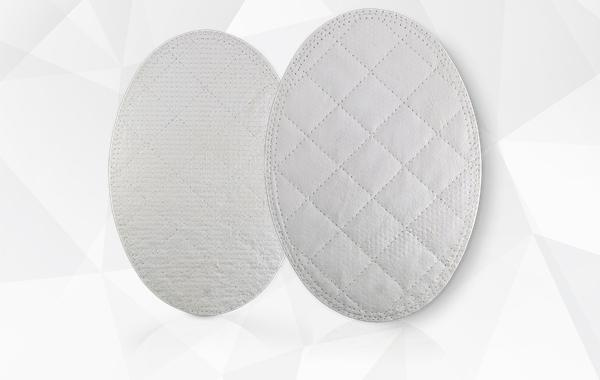
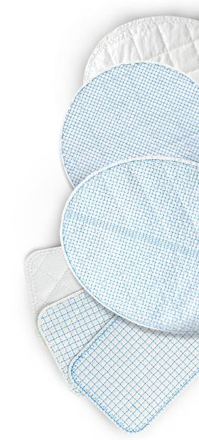

OviTex and OviTex PRS reinforced tissue matrices

Used in hernia repair and abdominal wall reconstruction
Used in plastic and reconstructive surgery
$1.8B
The company’s estimate of the total addressable annual U.S. market for OviTex (10-K); not a revenue forecast.

Layers of ovine (sheep) rumen tissue, stitched with polymer thread
New clearance · Announced Oct 5, 2026
510(k)
FDA 510(k) clearance, announced Oct 5, 2026
Cleared for soft-tissue reinforcement, specifically in muscle-flap transfer procedures, as temporary support to help secure the flaps (FDA 510(k) summary).
The Oct 5 release gives no launch date or sales.
$38.4M
H1 2026 revenue, down 1% from $38.7M; unaudited (10-Q)
$80.3M
2025 revenue, up 16% from $69.3M (10-K)
Q2 revenue was down 4%. The 10-Q cites lower OviTex PRS sales and U.S. price/mix pressure (H1 revenue by line, Note 4: PRS down 15%, OviTex up 5%).
H1 2026 net loss was $23.5M, up 11% from $21.2M (10-Q).
2026 revenue guidance was withdrawn Aug 10 (8-K).
$30.4M
Cash at Jun 30, 2026 (10-Q), down from $50.8M at Dec 31, 2025
$60.0M
Term-loan principal at Jun 30, due Nov 2030 (10-Q)
The company’s Aug 11 10-Q states substantial doubt about its ability to continue as a going concern, citing recurring losses and a forecast probable miss of its loan’s minimum-revenue covenant. Unless waived or amended, default could let the lender accelerate the $60.0M principal (due Nov 2030) and accrued interest; the company does not expect to have the liquidity to repay it.
Lenders agreed on Sep 28, after the 10-Q, not to test that covenant for the Q3 and Q4 2026 quarters only (8-K).
Substantial going-concern
doubt · 10-Q, Aug 11
Forward-looking statements (e.g., Q3 timing, Liora’s prospects) are uncertain; actual results may differ materially. Not an offer to sell or buy securities, or investment advice. 2026 figures (H1, Q2, Jun 30 balances) are unaudited. 10-Q: substantial doubt about going concern. Risks: loan covenant default; more financing and dilution; reverse split approved, none intended now; CEO/CFO changes; OviTex made by one contract manufacturer. Figures are from SEC filings through Oct 8; Q3 results (expected early November) may change them. See Risk Factors in TELA Bio’s SEC filings.